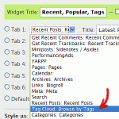

Tabbed Widgets plugin for WordPress has been updated to include most of the features that users of the plugin have requested since it was first released. Here is a quick list of all the improvements that are available in version 0.71:
- An “invisible” sidebar or widgetized area is added to the list of the available sidebars automatically. Now you can easily prepare and configure the widgets that you want to use inside a tabbed interface. Previously you would have to manually edit
template.phpof your theme, but now the plugin does it for you and for every theme. 
The drop-down list of widgets that are available for placement inside a tabbed interface now includes titles of the widgets which makes it possible to distinguish between multiple text widgets, for example. Previously you could end up having multiple text and rss widgets without any way of determining which is which.- Make any of the tabs open by default. Previously you could choose only a random or a hardcoded “start” tab.
- The horizontal tabs are now as smart as the accordion ones — the automatic rotation stops when a reader hovers it.
- Improved performance and significantly reduced database calls.
Notice: Version 0.7 has a bug which somehow makes some posts under ‘Edit’ section of WordPress dashboard to disappear. This is now fixed in 0.71.
Update Now
Get the latest version of Tabbed Widgets using the automatic plugin update feature within your WordPress dashboard, or from the dedicated page on WordPress Extend.
Great work ! The Text widget improvement is a great idea (it was impossible to use many text widgets without their name) ! And the hidden sidebar !!! Thank you :-)
I wrote to fast :-(. The plugin does not work anymore. I cannot choose any widget to put in my Tabbed widget. The list is empty :-((. I have to go back to the old version.
Li-An, I just tried installing a fresh copy of WordPress and it works perfectly. Could you please give me more detail on your installation — did you have tabbed widgets installed before, which version of WP and PHP are you using? Does it display any error messages?
Yes I got Tabbed Widget installed before (you can take a look on my blog, it works fine).
WP: 2.6.1
php 4
hosting: windows
No error message
having a big problem after the upgrade as well.
if I go to DESIGN => WIDGETS, I get a fatal error: `Fatal error: Nesting level too deep – recursive dependency? in /var/www/web6/web/wordpress/wp-includes/widgets.php on line 266`
I use wp 2.6 hosted on debian 4.1 and if I disable your plugin all works ok again.
see also here: http://wordpress.org/support/topic/199150?replies=1
Li-An, which version did you upgrade to? Was it 0.7 or 0.71?
ovidiu, this seems to be a PHP 5.2 bug. On line 266 of
wp-includes/widgets.phpwe find:$wp_registered_widgets[$widget]['callback'] == $callbackand in case of tabbed widgets
$wp_registered_widgets[$widget]['callback']is an object, while$callbackmight be a string and therefore the strict comparison (using===instead of==) would be required. I will try to find a way how to fix it.upgraded to 0.71
Yes I know its a PHP 5.2 bug after googling, but still it occured after upgrading your plugin so I thought I’d notify you.
Thx for answering and trying to help out.
ovidiu, thanks for letting me know about the bug.
I have found a way how to fix it. Unfortunatelly the WordPress plugin repository is currently down and I can not post an official update. Therefore, please download these two files (version 0.72) and overwrite the 0.71 ones inside your
tabbed-widgetsplugin folder.Ok, the latest 0.72 version is available from WordPress Extend now.
Well, this new version does work for the blog (the tabbed widgets are shown correctly) but I still cannot see the widgets in the Tabbed widgets option page :-(
http://img41529.pictiger.com/images/16555517/
So the old configuration is used but for the moment I cannot change anything (I tried to put the widgets I use in the Invisible Sidebar but it does not solve anything).
I thing I updated the 0.7 version.
thx, version 0.72 solved the problem :-)
hi Kaspars,
I just upgraded to the latest version, which is aswome… great work, indeed!
i wonder if it is possible to change one small thing (or have an option for it at least): when a tab is open it is not clickable – while i’d expect it to be… that is: you should be able to click it in order to close it down. not sure if it makes any sense for you also… just my 2 cents!
thanks,
beppe
Hi,
Using version 0.7.3, on WP 2.6.1, installation went smoothly, but when I go to the Tabbed Widgets page in admin I have a message:
Notice: List of active widgets is empty. Creating it with $this->get_active_widgets() now.
Excepted that apparently the list is not created, menus remain empty and so I can select the widgets to put in each tag
Thanks in advance for your help
Lots of
Warning: Invalid argument supplied for foreach() in /homepages/34/d250746115/htdocs/fmbs/wp-content/plugins/tabbed-widgets/tabbed-widgets.php on line 533
same error as Picard102
lots of invalid strings. using WP 2.6.2 and php 4.4.7
Ciao!
I got the same error. Does anybody know a solution for make it works?
Same problem as picard102
Greetings,
I’ve recently installed your fantastic plugin successfully onto the offline development version of my blog. Thank you so much for creating widget, it really is a work of art.
One question however:
Some of the widgets that I would like to add to the tabbed widget have internal options (i.e. options that I would normally set in the widget screen once they are added).
I’ve tried everything I can think of and can’t seem to figure out a way to set those while using the tabbed widget.
Thank you again,
-Vish.
Vishven, for that purpose this plugin creates an invisible sidebar (widgetized area) where you can place widgets that need to be customized. Once you have configured them, these widgets become available in the drop-down menu in Tabbed Widgets management section.
Hey there. I have now successfully installed your fantastic plugin after the fix you made with the widgets not showing up. Now I have another problem. I’ve got all the design side going right, but when I reload my page, the plugin seems to have malfunctioned. Instead of cycling through the tabs or accordions (I’ve tried both) it just lists the contents of the tabs straight down the sidebar. It’s almost like the command line telling it what to do isn’t there. Any thoughts? Any known conflicts with other plugins?
Heidi, your theme is the guilty one — it doesn’t apply unique identifiers to widgets. Here is an article that explains how to fix it.
New version, strange conflict with another plugin.
I’ve got this error message when I try to go on the tabbed widget plugin option page:
E:\inetpub\vhosts\li-an.fr\httpdocs\blog\wp-content\plugins\popularity-contest\popularity-contest.php on line 1633It’s strange because the popularity-contest plugin shows in my footer in another widget zone than the tabbed widget…
The two plugins are working well.
Sorry, the entire message is:
Fatal error: Call to a member function on a non-object in E:\inetpub\vhosts\li-an.fr\httpdocs\blog\wp-content\plugins\popularity-contest\popularity-contest.php on line 1633
Li-An, there shouldn’t be any conflicts with Popularity Contest plugin — I am using it on this blog as well and it works great with the latest version (0.76) of Tabbed Widgets. I’ll have a look at the line of
popularity-contest.phpthat you mentioned.Thank you.
Hi,
I just installed Tabbed Widgets and it don’t work.
I selected the sidebar menu options, I have a bunch of RSS feeds loaded into a series of RSS widgets, gave each a name, saved etc but no tabbed sidebar.
They take up a lot of room, so this seemed the ideal solution.
Is it because they’re separate widgets? But maybe I’m setting it up wrong? When I think about it, I need one option, RSS Feeds, under which all the Feeds show in the drop down, right?
B
Hey I love your plugin. I have a suggestion:
Add a “mouseover” event as an option instead of just the “onclick” event.
I was thinking the option could be enabled as a “checkbox” in the “tabbed widgets” option page right after the “Choose random start tab”.
What do you think?
Clifton,
Here is a link to a jquery hoveraccordion that does what I am talking about:
http://berndmatzner.de/jquery/hoveraccordion/
Clifton, I could add that as an option. It would require several small changes on the javascript part of this plugin, but it definitely can be done. And I know a type of motivation that would help me get it done very fast ;)
This isn’t complete, but I have a skeleton in place. Now I just need to connect the correct elements to the jquery.hoveraccordion.js
Here is a link to that file:
http://berndmatzner.de/jquery/hoveraccordion/jquery.hoveraccordion.js
Here are my edits:
tabbed-widgets.php Edits-
=================
Added After Line 130 – wp_enqueue_script(‘tw-accordion-hover’, $this->plugin_path . ‘js/jquery.hoveraccordion.js’, array($libtitle));//Clifton’s Edit
Added After function style_accordion Line 415 –
//Begin Clifton’s edit
function style_accordion_hover($defargs, $widgetdata, $wout) {
extract($defargs);
$this->hide_tabbed_titles = true;
$widgets_inside_count = count($widgetdata[‘widgets’]);
$without_title_css = ‘ without_title’;
if (!empty($widgetdata[‘showtitle’])) {
$widget_title = $before_title . $widgetdata[‘title’] . $after_title;
$without_title_css = ”;
}
$result = $before_widget;
$result .= $widget_title;
$result .= ‘<div class="tw-accordion-hover tw-accordion-‘. $defargs[‘widget_id’] . $without_title_css .’">’;
for ($count = 0; $count < $widgets_inside_count; $count++) {
if (is_callable($wout[$count][‘callback’])) {
if (strstr($wout[$count][‘params’][0][‘before_widget’], ‘<li’)) {
$wrap_tag = ‘ul’;
} else {
$wrap_tag = ‘div’;
}
$result .= ‘<h4 class="tw-widgettitle"><span>’. $widgetdata[‘titles’][$count] .'</span></h4> ‘;
$result .= ‘<‘. $wrap_tag .’ id="’. $defargs[‘widget_id’] .’-‘. $count .’" class="tabbed-widget-item">’;
$result .= $this->callMe($wout[$count][‘callback’], $wout[$count][‘params’]);
$result .= ‘</’. $wrap_tag .’>’;
}
}
$result .= ‘</div>’;
$result .= $after_widget;
return $result;
}
//End Clifton’s edit
Added after Line 535 – $options .= ‘<span>’ . $this->makeSimpleRadio($tw_options, $id, ‘style’, ‘accordion-hover’, __(‘hover accordion’)) . ‘ ‘. __(‘or’) .'</span> ‘;//Clifton’s Edit
uitabs.css Edits-
=================
/*Begin Clifton’s Edit*/
/* hover accordion */
.tw-accordion-hover { float:left; width:100%; padding:0; margin:0; }
.tw-accordion-hover .tabbed-widget-item { float:left; width:100%; margin:0; padding:0; overflow:hidden; }
.tw-accordion-hover .tw-widgettitle { font-size:1.1em; background:#eee; display:block; float:left; width:100%; padding:0.45em 0 0.45em 0; margin:2px 0 0 0; cursor: pointer; }
.tw-accordion-hover .tw-widgettitle span { display:block; padding:0 0.75em; background: transparent url(‘../images/accordion-collapsed.png’) no-repeat 95% 50%; cursor: pointer; }
.tw-accordion-hover .tw-widgettitle:hover, .tw-accordion .tw-hovered { background: #ddd url(‘../images/accordion-darker-bar.png’) repeat-x left top; }
.tw-accordion-hover .selected, .tw-accordion .selected:hover { cursor: text; background: #ddd url(‘../images/accordion-darker-bar.png’) repeat-x left top; }
.tw-accordion-hover .selected span, .tw-accordion .selected:hover span { cursor: text; background: transparent url(‘../images/accordion-active.png’) no-repeat 95% 50%; }
.tw-accordion-hover .selected span { text-decoration:none; }
.tw-accordion-hover .widget { margin-bottom:0; padding:0.5em 0 1.5em 0; }
.tw-accordion-hover .tw-first { border:none; }
.tw-accordion-hover .tw-last { }
/*End Clifton’s Edit*/
/*Begin Clifton’s Edit*/
#sidebar .tw-accordion-hover .tw-widgettitle { padding:0.55em 0 0.6em; }
#sidebar .tw-accordion-hover ul.tabbed-widget-item { margin:0.75em 0 1.25em 0; padding:0; list-style-image:none; }
#sidebar .tw-accordion-hover ul.tabbed-widget-item li.widget:before { content:”; display:none; }
#sidebar .tw-accordion-hover .widget { margin:0; }
#sidebar .tw-accordion-hover { margin-bottom:2em; margin-top:0; }
* html #sidebar .tw-accordion-hover .tw-widgettitle { font-size:1.1em; float:none; }
/*End Clifton’s Edit*/
================
Tell me what you think.
Clifton, thanks for your effort. However, as I said, there is no need to add extra PHP functions and javascript files — all you have to do is alter the tab change initialization even from click to hover (depending on tabbed widget settings).
I’ll add this
onhoveroption whenever I have some free time.Kaspars,
On line 256 in jquery.accordion.js-
Okay I know I can just change:
‘event: “click”,’
to
‘event: “mouseover”,’
and it will work fine.
I just think that not everyone will want to have the on hover event in their tab, so I suggested adding the additional option so that people can turn it off if they don’t like it.
That’s why I went the other route. It will require some small edits to the php in order to get the additional option listed.
I was just trying to help.
hey kaspers- thanks for this great widget. i am having the same problem that all of my accordians are just displaying straight down rather than in the actual accordia. i tried your fix, but that didn’t work either. any other ideas? i am on wordpress 2.6.2 and i am using the
http://graphpaperpress.com/2008/03/05/monochrome-gallery/
theme
you can see the test site at
http://www.cjorphoto.com/drphoto
any help would be great
chris
chris, you have somehow managed to rename the tabbed widgets plugin directory to
tabbed-widgets 2(notice the 2 and the empty space before it).sweet now it works kaspars.
the only thing is that when i changed the
‘before_widget’ => ”,
‘after_widget’ => ”,
i replaced
‘before_widget’ => ”,
‘after_widget’ => ”,
and this changed the formatting on the titles of my sidebar widgets. i can live with the new style but i would lke to have the old one back. any ideas?
thanks again and hope all is well –
chris
i don’t know why my typing didn’t show up there
but there was a ‘before_widget’ => ‘
tag that was there. when i replaced it i lost some of my formatting.
any help would be great.
chris
okay there is supposed to be a class=bottombar tag that i am trying to tell you about. sorry for the multi-post
chris, you can add as many classes as you require. There is even no need for the
widgetclass if your theme doesn’t need it. Append all the classes that were used before you made the changes to the newbefore_widgetcode and it should work.chris, there is a note before the comment form that says ‘If you post
HTMLorPHPcode, don’t forget to convert it toHTMLentities‘.thanks a ton kaspars. one more thing is there a way to add more than sixs tabs to one of the widgets?
hope all is well and thanks again for this i showed it to my boss today and he loved the look of the menu.
chris
chris, to add more widgets per tabbed widget, go to Plugin Management section, click on the Edit link in the Tabbed Widgets row. At the top of
tabbed-widgets.phpyou will seevar $tabs_per_tw = 6;. Change 6 to the number of widget you want.Kaspars, Same problem with this last version but I think there is a conflict with some plugin. For the moment the plugin works fine and if I want to change options I will get an old version.
Accordion tabs come up expanded. How do I fix this?
Hi Kaspars, awesome plugin! I just installed it and it makes a huge improvement to my site navigation.
My problem is that it seems to be interfering with the appearance in Firefox of any widget that I place directly below the Tab widget in the sidebar. It displays correctly in Chrome and Explorer, and I also tried upgrading Firefox from 2 to 3.0, and no luck.
I saw a previous comment on your site from someone with a similar problem, who suggested adding a line to the css style doc, so I tried adding this line:
.rsidebar ul li.tw-tabbed-widgets {moz-float-edge: content-box;}
I’m no expert on CSS and it hasn’t solved my problem, so…
Any suggestions would be greatly appreciated!
Brian
TheMusicSnob.com
Brian, this is an issue of your theme. Your theme uses a gigantic list for constructing the whole sidebar (which is very unsemantic). The problem is that widgets are not floated and cleared. To fix it, add this CSS to the end of your
style.css:ul li.widget { float:left; width:100%; clear:both; }and it should work.
Wow Kaspars, what a quick turnaround on my comment. And your CSS fix worked! I wish I knew enough about coding to understand the flaws with my sidebar construction, but I am happy settling for one that works!
Thank you so much,
Brian
Brian, I am glad that it worked. And thank you for the donation! It is really appreciated.
Kaspars,
Is there a way to call the widget outside of the sidebar (widget function)? I want to call to it from within a template file.
Thanks!
kevin, there is no way you can do it (as far as I know). This plugin creates widgets out of other widgets, and relies heavily on the unique identifiers of widget wrappers which are automatically assigned by WordPress.
I highly suggest you create a widgetized area (aka sidebar) and use this plugin that way.
Hi Kaspars,
Really a nice plugin. It’s a pity I can’t get it work. As someone else on this page, my problem is that both the accordion and the tabbed syles always show all content (everithing is visible), not hiding all included widget but one as I would expect.
I tried the fixes mentioned, but they did not work…
You can see the tabbed widget on bottom left of every page…Thank you for support !!
Alessandro, your theme doesn’t apply unique identifiers to every widget. Please read through the Theme Requirements section above and also all the comments to find the solution.
Hi all,
I installed the widget without a problem. I set the options and updated. I’m pretty new to WordPress and the world of plugins and widgets, so this next question might seem like something a noob would ask. But, since I am a noob, I hope I’m forgiven. :-)
After I refreshed my site page, the tabbed widget didn’t show up in the sidebar. Is there something else I’m supposed to do before it shows up? Am I supposed to past something somewhere? If so, what do I paste and where do I past it? :-/
Oh…I guess I should say that I set my tabbed widget to show two tabs: 1) Recent Comments, 2) Archives. Presently, I already have these two items appearing in my sidebar as separate items. Do I need to remove or disable them first?
Thanks.
Scott, did you add that tabbed widget to the sidebar? It is done through Design > Widgets. The widget you need to add starts with
TW.Kaspars,
Kaspars, thanks for the reply. I checked and, yes, I did add it. I’m not sure why it’s not showing up.
Hi everybody. I’m still looking for help with the tabbed widget (read my post above). If anyone has any ideas, I’d love to hear them. Thanks.
Here’s my blog, in case you need to examine it for a possible cause of the problem: [ http://illuminodyssey.com ].
Scott, (1) your theme needs to apply unique identifiers to all widgets, which it currently doesn’t do. Browse around this website to see how to add that functionality. (2) I suggest you ask for support in WordPress support forums.
Kaspars, thanks for the reply. What are unique identifiers? I’ve heard them mentioned but don’t really know anything about them. Also, how can I figure out how to add that functionality (I guess you’re referring to unique identifiers) by browsing around on this website?
I’m sorry if I’m asking noob questions but I am one. :-)
Kaspars,
Is there a way to add a tabbed widget directly to sidebar.php? I have looked through out this site and on wordpress forums. I would like to add this in manually on top of the dynamic sidebars.
Thanks!
Kaspars,
Is there an easy way to adjust the amount of blank space after the widget?
Thanks!
Yes — by using CSS. Add it at the end of your theme’s
style.css.When I click (into Design Menu) Tabbed Widgets, the page shows a blank page with this: [[]]
what´s wrong?
Ismael, more information would be useful, like the version of WordPress and PHP, is it a linux server, what version of Tabbed Widget plugin are you using.
WordPress –> 2.6.2
PHP –> 5.2.1
Linux Server – lighttpd/1.4.18
Tabbed Widget –> last version 0.77, also I have tested 0.76 with the same result
Can you fix it?
thanks!
Ismael, thanks for posting that. Unfortunately I have no idea where the problem could be. It is probably caused by the script that generates the list of available widgets, but I don’t know why. Once I come up with something, I’ll email it to you.
Could you please email me screenshots of widget and tabbed widget management pages.
Better a video than an image:
http://www.24segundos.com/wp-content/uploads/TabbedWidget.mov
thanks for your help!
Can anyone tell me what unique identifiers are and how to add them to my widgets so I can get Tabbed Widget working??
Thanks!
Can i add this manually in the sidebar? If yes whats the code